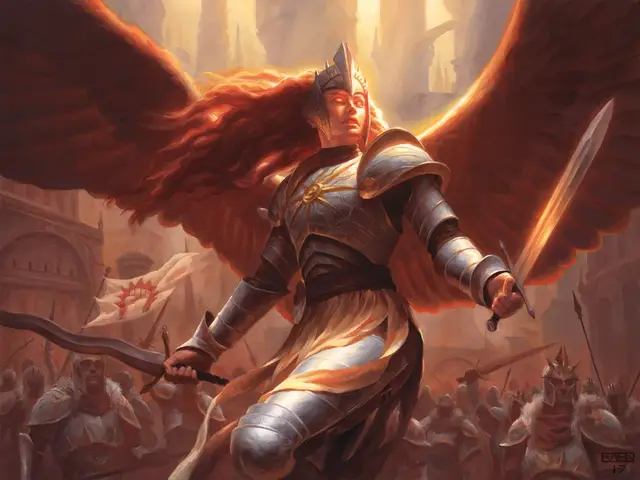

Аурелия
Aurelia
Средний Небожитель (Ангел), законно-добрый, именной НИП

Класс Доспеха 22 (природный доспех)
Хиты 287 (25к8 + 175)
Скорость 50 футов, летая 150 футов
| мод | спас | ||
|---|---|---|---|
| СИЛ | 26 | +8 | +8 |
| ЛОВ | 24 | +7 | +14 |
| ТЕЛ | 25 | +7 | +14 |
| мод | спас | ||
|---|---|---|---|
| ИНТ | 17 | +3 | +3 |
| МДР | 25 | +7 | +7 |
| ХАР | 30 | +10 | +17 |
Навыки Восприятие +14, Проницательность +14
Сопротивление урону излучение, некротическая энергия; дробящий, колющий, рубящий от немагических атак
Иммунитет к урону яд
Иммунитет к состояниям испуг, истощение, отравление, очарование, паралич
Чувства истинное зрение 120 футов, пассивное Восприятие 24
Языки Все
Опасность 23 (50000 опыта)
Бонус мастерства +7
Особенности
Легендарное сопротивление (3/день). Если Аурелия проваливает спасбросок, вместо этого она может сделать спасбросок успешным.
Сопротивление магии. Аурелия совершает с преимуществом спасброски от заклинаний и других магических эффектов.
Черты Аурелии.
Идеал:. «Справедливость. Мы должны сделать все возможное, чтобы установить справедливые и милосердные отношения между людьми Равники - при необходимости силой оружия».
Привязанность:. «Весь легион подчиняется моим командам, и поэтому я обязана каждому из своих солдат».
Слабость:. «Я бросаюсь в бой, мало заботясь о собственном благополучии».
Действия
Мультиатака. Аурелия совершает три атаки Длинным мечом и использует Лидерство.
Длинный меч. Рукопашная атака оружием: +15 к попаданию, досягаемость 5 фт., одна цель. Попадание: 12 (1к8 + 8) рубящего урона или 13 (1к10 + 8) рубящего урона при использовании двумя руками, плюс 27 (6к8) урона излучением.
Лидерство. Аурелия произносит несколько вдохновляющих слов одному видимому существу в пределах 30 футов от нее. Если существо может её слышать, оно может добавить к10 к одному броску атаки или спасброску перед началом следующего хода Аурелии.
Спираль полководца (перезарядка 5–6). Дальнобойная атака заклинанием: +17 к попаданию, дистанция 60 фт., одно существо. Попадание: 54 (12к8) урона излучением, и Аурелия может выбрать другое существо, которое она может видеть в пределах 10 футов от цели. Второе существо восстанавливает 27 (6к8) хитов.
Реакции
Парирование. Аурелия добавляет +7 к своему КД против одной рукопашной атаки, которая может по ней попасть. Для этого Аурелия должна видеть нападающего и владеть оружием ближнего боя.
Непоколебимость. Когда Аурелия подвергается эффекту, который может сдвинуть ее с места, сбить с ног или и то, и другое, она может использовать свою реакцию, чтобы ее не сдвинули и не сбили с ног.
Легендарные действия
Аурелия может совершить 3 легендарных действия, выбирая из представленных ниже вариантов. За один раз можно использовать только одно легендарное действие, и только в конце хода другого существа. Аурелия восстанавливает использованные легендарные действия в начале своего хода.
Командование союзниками. Аурелия выбирает до трех существ, которых она видит в пределах 30 футов от себя. Если выбранное существо может видеть или слышать Аурелию, оно может немедленно реакцией совершить с преимуществом одну атаку оружием.
Атака длинным мечом (стоит 2 действия). Аурелия совершает одну атаку Длинным мечом.
Напугать врагов (стоит 3 действия). Аурелия выбирает целью до пяти существ, которых она может видеть в пределах 30 футов от себя. Каждая цель должна преуспеть в спасброске Мудрости Сл 25, иначе будет испугана Аурелией до конца своего следующего хода. Любая цель в пределах 5 футов от Аурелии совершает спасбросок с помехой.
Описание
Ангел Аурелия возглавляет Легион Боросов. За годы своего руководства она проявила сильное уважение к обычным гражданам, которые часто оказываются в эпицентре столкновений гильдий.
Истинная справедливость, утверждает Аурелия, заключается не только в соблюдении буквы существующих законов (пусть Азориусы беспокоятся об этом), но и в установлении равноправных и сострадательных отношений между всеми жителями Равники. Это означает защиту слабых от грабежей сильными, укрытие невинных, которым угрожает война, и обеспечение того, чтобы соблюдение закона не стало репрессивным. Аурелия активно поддерживает усилия по установлению прочного мира между гильдиями в отсутствие Договора Гильдий.
Аурелия предпочитает вести Легион Боросов с фронта. Она несет быстрое и безжалостное наказание нечестивым, а о ее характере ходят легенды.
Бессмертная природа. Аурелия не нуждается ни в еде, ни в питье, ни во сне.